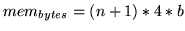
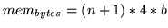

The first stage of any language model development project is data preparation. As mentioned in the introduction, the text data used in these example has already been conditioned. If you examine each file you will observe that they contains a sequence of tagged sentences. When training a language model you need to include sentence start and end labelling because the tools cannot otherwise infer this. Although there is only one sentence per line in these files, this is not a restriction of the HTK tools and is purely for clarity - you can have the entire input text on a single line if you want. Notice that the default sentence start and sentence end tokens of <s> and </s> are used - if you were to use different tokens for these you would need to pass suitable configuration parameters to the HTK tools.15.1 An extremely simple text conditioning tool is supplied in the form of LCOND.PL in the LMTutorial/extras folder - this only segments text into sentences on the basis of punctuation, as well as converting to uppercase and stripping most punctuation symbols, and is not intended for serious use. In particular it does not convert numbers into words and will not expand abbreviations. Exactly what conditioning you perform on your source text is dependent on the task you are building a model for.
Once your text has been conditioned, the next step is to use the tool
LGPREP to scan the input text and produce a
preliminary set of sorted  -gram files. In this tutorial we will
store all
-gram files. In this tutorial we will
store all  -gram files created by LGPREP will be stored in
the holmes.0 directory, so create this directory now. In a
Unix-type system, for example, the standard command is
-gram files created by LGPREP will be stored in
the holmes.0 directory, so create this directory now. In a
Unix-type system, for example, the standard command is
$ mkdir holmes.0
The HTK tools maintain a cumulative word map to which every new
word is added and assigned a unique id. This means that you can add
future  -gram files without having to rebuild existing ones so long
as you start from the same word map, thus ensuring that each id
remains unique. The side effect of this ability is that
LGPREP always expects to be given a word map, so to prepare
the first
-gram files without having to rebuild existing ones so long
as you start from the same word map, thus ensuring that each id
remains unique. The side effect of this ability is that
LGPREP always expects to be given a word map, so to prepare
the first  -gram file (also referred to elsewhere as a `gram' file)
you must pass an empty word map file.
-gram file (also referred to elsewhere as a `gram' file)
you must pass an empty word map file.
You can prepare an initial, empty word map using the LNEWMAP tool. It needs to be passed the name to be used internally in the word map as well as a file name to write it to; optionally you may also change the default character escaping mode and request additional fields. Type the following:
$ LNewMap -f WFC Holmes empty.wmapand you'll see that an initial, empty word map file has been created for you in the file empty.wmap. Examine the file and you will see that it contains just a header and no words. It looks like this:
Name = Holmes SeqNo = 0 Entries = 0 EscMode = RAW Fields = ID,WFC \Words\Pay particular attention to the SeqNo field since this represents the sequence number of the word map. Each time you add words to the word map the sequence number will increase - the tools will compare the sequence number in the word map with that in any data files they are passed, and if the word map is too old to contain all the necessary words then it will be rejected. The Name field must also match, although initially you can set this to whatever you like.15.2 The other fields specify that no HTK character escaping will be used, and that we wish to store the (compulsory) word ID field as well as an optional count field, which will reveal how many times each word has been encountered to date. The ID field is always present which is why you did not need to pass it with the -f option to LNEWMAP.
To clarify, if we were to use the Sherlock Holmes texts together with
other previously generated  -gram databases then the most recent
word map available must be used instead of the prototype map file
above. This would ensure that the map saved by LGPREP once the
new texts have been processed would be suitable for decoding all
available
-gram databases then the most recent
word map available must be used instead of the prototype map file
above. This would ensure that the map saved by LGPREP once the
new texts have been processed would be suitable for decoding all
available  -gram files.
-gram files.
We'll now process the text data with the following command:
$ LGPrep -T 1 -a 100000 -b 200000 -d holmes.0 -n 4
-s "Sherlock Holmes" empty.wmap train/*.txt
The -a option sets the maximum number of new words that can be encountered in the texts to 100,000 (in fact, this is the default). If, during processing, this limit is exceeded then LGPREP will terminate with an error and the operation will have to be repeated by setting this limit to a larger value.
The -b option sets the internal  -gram buffer size to
200,000
-gram buffer size to
200,000  -gram entries. This setting has a direct effect on the
overall process size. The memory requirent for the internal buffer can
be calculated according to
 where
-gram entries. This setting has a direct effect on the
overall process size. The memory requirent for the internal buffer can
be calculated according to
 where  is the
is the
 -gram size (set with the -n option) and is the buffer
size. In the above example, the
-gram size (set with the -n option) and is the buffer
size. In the above example, the  -gram size is set to four which
will enable us to generate bigram, trigram and four-gram language
models. The smaller the buffer then in general the more separate
files will be written out - each time the buffer fills a new
-gram size is set to four which
will enable us to generate bigram, trigram and four-gram language
models. The smaller the buffer then in general the more separate
files will be written out - each time the buffer fills a new  -gram
file is generated in the output directory, specified by the -d
option.
-gram
file is generated in the output directory, specified by the -d
option.
The -T 1 option switches on tracing at the lowest level. In general you should probably aim to run each tool with at least -T 1 since this will give you better feedback about the progress of the tool. Other useful options to pass are -D to check the state of configuration variables - very useful to check you have things set up correctly - and -A so that if you save the tool output you will be able to see what options it was run with. It's good practice to always pass -T 1 -A -D to every HTK tool in fact. You should also note that all HTK tools require the option switches to be passed before the compulsory tool parameters - trying to run LGPrep train/*.txt -T 1 will result in an error, for example.
Once the operation has completed, the holmes.0 directory should contain the following files:
gram.0 gram.1 gram.2 wmapThe saved word map file wmap has grown to include all newly encountered words and the identifiers that the tool has assigned them, and at the same time the map sequence count has been incremented by one.
Name = Holmes SeqNo = 1 Entries = 18080 EscMode = RAW Fields = ID,WFC \Words\ <s> 65536 33669 IT 65537 8106 WAS 65538 7595 ...Remember that map sequence count together with the map's name field are used to verify the compatibility between the map and any
$ LGList holmes.0/wmap holmes.0/gram.2 | more 4-Gram File holmes.0/gram.2[165674 entries]: Text Source: Sherlock Holmes ' IT IS NO : 1 'CAUSE I SAVED HER : 1 'EM </s> <s> WHO : 1 </s> <s> ' IT : 1 </s> <s> A BAND : 1 </s> <s> A BEAUTIFUL : 1 </s> <s> A BIG : 1 </s> <s> A BIT : 1 </s> <s> A BROKEN : 1 </s> <s> A BROWN : 2 </s> <s> A BUZZ : 1 </s> <s> A CAMP : 1 ...If you examine the other
$ mkdir holmes.1 $ LGCopy -T 1 -b 200000 -d holmes.1 holmes.0/wmap holmes.0/gram.* Input file holmes.0/gram.0 added, weight=1.0000 Input file holmes.0/gram.1 added, weight=1.0000 Input file holmes.0/gram.2 added, weight=1.0000 Copying 3 input files to output files with 200000 entries saving 200000 ngrams to file holmes.1/data.0 saving 200000 ngrams to file holmes.1/data.1 saving 89516 ngrams to file holmes.1/data.2 489516 out of 489516 ngrams stored in 3 filesThe resulting